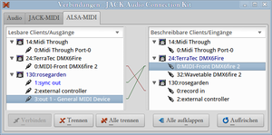
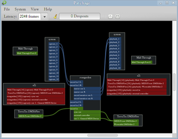
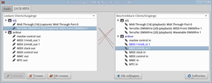
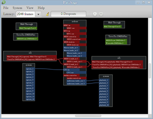

MIDI
Zum Verständnis dieses Artikels sind folgende Seiten hilfreich:
MIDI steht für Musical Instrument Digital Interface. Vereinfacht ist MIDI eine Datenstruktur zur Steuerung von elektronischen Musikinstrumenten. Eine MIDI-Datei enthält dabei keinen Töne, sondern die Musiknoten für 16 Kanäle. Jedem Kanal kann eines von 128 verschiedenen Sound-Programmen zugewiesen werden. Weitere Informationen befinden sich in dieser Einführung  .
.
MIDI abspielen¶
Um sich MIDI-Dateien in guter Qualität anzuhören, ist der Player Audacious empfehlenswert. Dazu wird ein SoundFont, wie z.B. der weiter unten erwähnte Fluid-Soundfont, benötigt. Um diesen anschließend auszuwählen, geht man im Menü "Einstellungen" auf das Eingabeplugin "Amidi" und wählt unter "FluidSynth-Backend" die entsprechende .sf2 Soundfont-Datei aus (nach der Installation des Fluid-Soundfonts befindet sich die entsprechende Datei im Verzeichnis /usr/share/sounds/sf2).
Wem es nur darum geht, eine MIDI-Datei anzuhören und eventuell noch einzelne Stimmen stumm zu schalten bzw. das Tempo anzupassen, kann man am einfachsten ein Notenprogramm wie Musescore verwenden und braucht sich nicht mit der u.U. komplizierten Installation und Konfiguration von MIDI-Software herumzuschlagen. Das Abspielen einer MIDI-Datei umfasst zwei Vorgänge: Ein MIDI-Player oder ein Sequenzer erzeugt aus einer MIDI-Datei Steuerbefehle für den Tonerzeuger. Der Tonerzeuger produziert aus den Befehlen Töne und macht die Musik damit hörbar.
Der Tonerzeuger kann sowohl in Hardware als auch in Software realisiert sein.
Zu den Hardware-basierten Lösungen gehören:
externe MIDI-Instrumente am MIDI-Ausgang des Computers
eine Soundkarte mit integriertem MIDI-Synthesizer-Chip
Zu den Software-basierten Lösungen gehören:
Die Verwendung einer Soundbank (Soundfont), die von der Soundkarte verwaltet wird - v.A. zur Wiedergabe von Naturklängen wie Klavier etc. (auch Wavetable-Synthesizer genannt).
Die Software-Emulation eines Synthesizers, z.B. amSynth
oder Bristol - hiermit werden überwiegend synthetische Klänge erzeugt.
Im Fall von Timidity sind MIDI-Player und Tonerzeuger (Synthesizer) in einem Programm integriert.
Synthesizer und Player in einem: TiMidity¶
TiMidity ist ein Software-Synthesizer, der MIDI-Dateien entweder direkt abspielt oder aber als Tonerzeuger für einen Sequenzer wie z.B. Rosegarden dient.
timidity (universe)
 mit apturl
mit apturl
Paketliste zum Kopieren:
sudo apt-get install timidity
sudo aptitude install timidity
Hier muss zum Abspielen nicht erst ein SoundFont installiert werden, denn TiMidity bewältigt diese Aufgaben selbst.
Allerdings ist das von TiMidity als Standard benutzte Soundfont nicht sehr umfangreich, so dass beim Abspielen von MIDI-Dateien oft einzelne Instrumente nicht zu hören sind. Mehr Spaß macht TiMidity mit dem Soundfont
fluid-soundfont-gm (universe, ca. 120MB)
mit apturl
Paketliste zum Kopieren:
sudo apt-get install fluid-soundfont-gm
sudo aptitude install fluid-soundfont-gm
und ggf
fluid-soundfont-gs (universe, )
mit apturl
Paketliste zum Kopieren:
sudo apt-get install fluid-soundfont-gs
sudo aptitude install fluid-soundfont-gs
In der Datei /etc/timidity/timidity.cfg muss für dieses Soundfont die Zeile
source /etc/timidity/freepats.cfg
geändert werden in [5]
source /etc/timidity/fluidr3_gm.cfg source /etc/timidity/fluidr3_gs.cfg
Dazu benötigt man Root-Rechte.
Ein kleiner Auszug von der Vielseitigkeit von TiMidity soll hier gegeben werden:
MIDI-Dateien abspielen
timidity midi.mid
Timitidy mit einer GUI starten
timidity -ig
Eventuell muss hierfür das Paket timidity-interfaces-extra (universe) installiert werden.
Musikplayer-Interface (nur MIDI)
timidity -ia
umwandeln von MIDI-Dateien ins WAV-Format
timidity -OwS input.mid -o output.wav
Startbar als Server, um anderen Programmen (wie pmidi) einen Port anzubieten
timidity -iA -B2,8 -Os1l -s 44100
Wenn man TiMidity nur ab und zu nutzen möchte und auch mal ein Sequenzer-Programm einsetzen möchte, kann sich ein kleines Skript, zum Beispiel startmidi schreiben:
sudo modprobe snd-seq-device sudo modprobe snd-seq-midi sudo modprobe snd-seq-oss sudo modprobe snd-seq-midi-event sudo modprobe snd-seq timidity -iA -B2,8 -Os1l -s 44100
Damit die Datei auch ausführbar ist, noch ein
chmod 755 startmidi"
Nun kann man einfach das Skript starten und hat sofort ein MIDI-Ausgabegerät zum Beispiel für den Sequenzer Rosegarden zur Verfügung. Nach dem Ausführen bekommt man die Ausgabe:
Timidity starting in ALSA server mode Opening sequencer port 128:0 128:1
Falls es beim Abspielen "ruckelt", kann man die Reverb und Chorus wie folgt abschalten:
timidity -iA -B2,8 -Os1l -s 44100 -EFreverb=0 -EFchorus=0
Ein Blick in die Hilfe-Seiten lohnt sich auf jeden Fall.
man timitidy
Synthesizer und Player/Sequenzer getrennt¶
Tonerzeuger für ausschließlich synthetische/elektrische Klänge wie amSynth oder Bristol kommen ohne Soundfonts aus. Zum Betrieb eines Synthesizers für Naturklänge (Wavetable-Synthese) muss dagegen immer ein Soundfont verfügbar sein.
Hochwertige Soundfonts können unter Ubuntu direkt installiert werden:
fluid-soundfont-gm (universe)
fluid-soundfont-gs (universe)
mit apturl
Paketliste zum Kopieren:
sudo apt-get install fluid-soundfont-gm fluid-soundfont-gs
sudo aptitude install fluid-soundfont-gm fluid-soundfont-gs
Die so installierten Soundfonts befinden sich dann in /usr/share/sounds/sf2. Soundfonts können auch aus anderen Quellen bezogen werden. Die Fonts haben die Endung .sf2 oder .sfArk und finden sich zum Beispiel auf dem Medium mit den Soundkartentreibern oder im Internet auf hammersound.net .
Soundfonts, die im .sfArk-Format vorliegen, müssen vor der Verwendung entpackt werden. Auf der Seite melodymachine.com kann man dazu das Programm sfArkXTc herunterladen und entpacken [4]. Jetzt entpackt man den Soundfont mit dem Befehl [2]:
./sfarkxtc soundfont.sfArk
Software-Synthesizer: Qsynth / Fluidsynth¶
Qsynth ist eine komfortable grafische Oberfläche für Fluidsynth. Bei der Installation des Pakets
qsynth (universe)
mit apturl
Paketliste zum Kopieren:
sudo apt-get install qsynth
sudo aptitude install qsynth
wird Fluidsynth automatisch mit installiert.
Qsynth wird über das Menü "Anwendungen -> Unterhaltungsmedien" gestartet und muss laufen, bevor der Sequenzer gestartet wird. Unter "Options/Audio" ist eventuell noch der richtige Audiotreiber (z.B. ALSA , PulseAudio oder JACK) auszuwählen. Zudem muss unter "Options/Soundfonts" ein Soundfont ausgewählt sein - dann ist der Synthesizer einsetzbar.
Das eigentliche Abspielen von MIDI-Dateien wird weiter unten im Abschnitt "Midi Programm verwenden" behandelt.
Hinweis:
Fluidsynth bietet eine Vielzahl von Funktionen, die hier nicht alle behandelt werden können. Man kann zum Beispiel mehrere Soundfonts gleichzeitig laden oder Fluidsynth zum Abspielen von MIDIs benutzen.
Hardware-Synthesizer¶
Manche Soundkarten wie die Soundblaster Live oder Audigy2 können Soundfonts direkt verwenden. Der Vorteil dieser Methode besteht darin, dass die bei größeren Soundfonts recht hohe Rechenleistung von der Soundkarte erbracht wird und nicht von der CPU.
Benötigt wird hierzu das Paket [1]
awesfx (universe)
mit apturl
Paketliste zum Kopieren:
sudo apt-get install awesfx
sudo aptitude install awesfx
Außerdem müssen die Kernelmodule snd_seq_midi, snd_emux_synth und snd_emu10k1_synth geladen sein [3].
Damit der Soundtreiber auf einen Soundfont zugreifen kann, lädt man diesen in den Speicher [2]:
Für ALSA:
asfxload soundfont.sf2
Für OSS:
sfxload soundfont.sf2
MIDI-Programme verwenden¶
Das Kernel-Modul snd-seq ist standardmäßig geladen.
MIDI-Player versus MIDI-Sequencer¶
Zur Steuerung von Tonerzeugern (Synthesizer) per MIDI gibt es zwei Programmtypen. Reine MIDI-Player (z.B. pmidi) wandeln lediglich MIDI-Dateien in Steuerbefehle für den Tonerzeuger um. MIDI-Sequenzer (z.B. Rosegarden) ermöglichen darüber hinaus, MIDI-Dateien zu bearbeiten und umfangreiche eigene Kompositionen zu erstellen. Letztere sind deshalb eher für Musiker gedacht.
MIDI-Player für die Konsole: pmidi¶
Exemplarisch soll hier das Abspielen einer MIDI-Datei mit dem Programm pmidi beschrieben werden. Dazu wird das folgende Paket benötigt [1]:
pmidi (universe)
mit apturl
Paketliste zum Kopieren:
sudo apt-get install pmidi
sudo aptitude install pmidi
Zunächst lässt man alle verfügbaren Geräte auflisten [2]:
pmidi -l
Falls man Fluidsynth als Synthesizer verwendet, sollte eine Zeile
128:0 FLUID Synth (7176) Synth input port (7176:0)
dabei sein. Wichtig ist der Port, der ganz links steht. Diesen gibt man beim Aufruf von pmidi mit an.
Verwendet man einen Hardwaresynthesizer, sollte man ein Gerät mit "MPU-401" im Namen versuchen. Im Allgemeinen kann man das richtige Gerät durch Ausprobieren finden. Eine MIDI-Datei kann man nun zum Beispiel mit
pmidi -p 128:0 midi.mid
abspielen.
MIDI-Sequenzer mit grafischer Oberfläche¶
Rosegarden ist ein leistungsfähiger Sequenzer, der sich vor allem an Musiker und Songschreiber richtet. Er kann Musikstücke auch als Notensatz anzeigen und bearbeiten, Audio-Spuren integrieren und Effekt-Plugins verwenden. Hier wird kurz die Verwendung von Rosegarden mit Qsynth als Tonerzeuger beschrieben. Qsynth muss vor Rosegarden gestartet werden und zur Tonerzeugung konfiguriert sein (s.o). Beim Start von Rosegarden kommt zunächst eine Fehlermeldung wegen des nicht laufenden JACK-Servers. Sie kann ignoriert werden, wenn man nur mit Qsynth arbeiten möchte.
Im Menu "Studio -> Midi-Geräte verwalten" kann Qsynth als Tonerzeuger für die MIDI-Ausgabe festgelegt werden. Wenn Qsynth läuft, sollte dies schon automatisch einstellt sein. Die Bezeichnung für Qsynth ist hier "128:0 Synth input Port (qsynth:0)" oder ähnlich. Damit ist die Konfiguration abgeschlossen, und es können MIDI-Dateien oder eigene Kompositionen abgespielt werden.
MIDI-Programme¶
Folgende MIDI-Programme wurden unter Ubuntu getestet:
pmidi
- MIDI-Player (MPU, SF2) Timidity
- MIDI->WAV Converter, Player und Synthesizer in Einem Rosegarden - Sequenzer-Editor (MPU, SF2)
KeyKit
- MIDI-Player und -Generator (nur im MPU-Modus getestet)
NtEd kann .mid-Dateien verarbeiten und für nicht-MIDI-fähige Soundkarten Timidity für die Ausgabe einsetzen.
MuseScore kann ebenfalls Midi-Dateien wiedergeben, und auch erstellen.
Externe MIDI-Geräte anschließen¶
Der MIDI-Standard ermöglicht eine Verbindung zwischen Musikinstrumenten und anderen MIDI-Geräten in Echtzeit und ist damit auch zum Live-Musizieren geeignet. Hierzu dient eine serielle Schnittstelle mit fünfpoligen DIN-Steckern.
Was kann man mit der Hardware-MIDI-Schnittstelle machen?¶
Die Schnittstelle ist sehr vielseitig fürs Musikmachen nutzbar. Beispiele sind:
Die Ansteuerung eines externen Tonerzeugers (Keyboard, Synthesizer, Sampler) durch den Sequenzer.
Das Einspielen von Melodien in den Sequenzer über eine MIDI-Tastatur
Das Synchronisieren des Software-Sequenzers mit einer Hardware-Drummachine etc.
Datensicherung von älteren Musikinstrumenten, die noch kein USB besitzen.
Die Benutzung der Schnittstelle¶
Für einen MIDI-Anschluss am PC braucht man ein MIDI-Interface. Bei vielen Soundkarten ist das MIDI-Interface schon integriert, ansonsten sind USB-MIDI-Interfaces für wenig Geld erhältlich.
Wird ein von Linux unterstütztes USB-MIDI-Interface an den Computer angeschlossen, erkennt Ubuntu es "out of the box" und stellt es als /dev/midi0 oder /dev/midi1 zur Verfügung.
cat /dev/sndstat
Sound Driver:3.8.1a-980706 (ALSA v1.0.20 emulation code) Kernel: Linux ubuntu 2.6.31-20-generic #57-Ubuntu SMP Mon Feb 8 09:05:19 UTC 2010 i686 Config options: 0 Installed drivers: Type 10: ALSA emulation Card config: HDA Intel at 0xd2300000 irq 22 E-MU Systems, Inc. E-MU XMidi1X1 at usb-0000:00:1d.1-1, full speed Audio devices: 0: AD198x Analog (DUPLEX) Synth devices: NOT ENABLED IN CONFIG Midi devices: 1: E-MU XMidi1X1 Timers: 31: system timer Mixers: 0: Analog Devices AD1986A 1: USB Mixer
Je nach Gerät kann mindestens ein MIDI-Eingang und ein MIDI-Ausgang genutzt werden. In Rosegarden wird sowohl der Eingang als auch der Ausgang angezeigt mit einer Bezeichnung wie
20:E-Mu XMidi1x1
Die Bezeichnung ist in Ubuntu also sehr ähnlich wie bei der Verbindung zu einem Software-Tonerzeuger. Tatsächlich können Hardware- und Software-MIDI-Geräte frei miteinander kombiniert werden. Zum Beispiel kann der Sequenzer Rosegarden in einem Fall einen Hardware-Synthesizer steuern und im anderen Fall von der Tastatur eines E-Pianos per MIDI gesteuert werden.
Wichtig für die Verbindung ist in jedem Fall, dass MIDI-Software und externes Gerät zum Senden und Empfangen auf den gleichen MIDI-Kanal eingestellt sind!
MIDI-Verbindungen über JACK¶
Sobald man MIDI auf einem Linux-System intensiver nutzen möchte, lassen sich die Verbindungen am einfachsten mit Hilfe des Soundservers JACK herstellen. Das können rechner-interne Verbindungen sein, aber ebenso auch Verbindungen zu externen Geräten wie Synthesizern, Effektgeräten, DAW-Steuergeräten ("Controllern") etc.
JACK fungiert dabei als eine Art Schaltzentrale und muss dazu mit den MIDI-Schnittstellen der einzelnen Hard- und Softwareelemente verbunden werden. Das kann man auf zweierlei Art bewerkstelligen: über ALSA-MIDI oder über JACK-MIDI. Letztere Methode scheint auf den ersten Blick umständlicher einzurichten; sie dürfte aber im Zweifelsfalle zuverlässiger arbeiten und wird wohl auch deshalb auf einer Anleitungsseite der JACK-Entwickler "the recommended-by-the-pros way" genannt.
ALSA-MIDI¶
Zur Vorbereitung muss man zwei Justagen im Qjackctl-Einstellungsfenster kontrollieren. Hat man JACK gerade erst installiert bzw. zuvor noch keine Veränderungen vorgenommen, sind diese Justagen bereits "ab Werk" passend eingestellt:
Auf der Registerkarte "Einstellungen" muss "MIDI-Treiber" auf "raw" stehen.
Auf der Registerkarte "Verschiedenes" muss ein Haken vor "Unterstützung für ALSA-Sequencer bereitstellen" stehen.
Falls man diese Justagen jetzt erst vorgenommen hat: JACK anschließend stoppen, Qjackctl beenden und damit schließen, danach erneut öffnen und JACK starten. Im Fenster "Verbindungen" ist jetzt eine Registerkarte "ALSA-MIDI" vorhanden. Dort finden sich die Ein- und Ausgänge der MIDI-Hardware im Rechner. Sobald man MIDI-bezogene Programme öffnet, tauchen auch deren Ein- und Ausgänge dort auf, sodass man nach Belieben Verbindungen herstellen kann.
JACK-MIDI¶
Auch hier sind zwei Justagen im Qjackctl-Einstellungsfenster nötig. Sie laufen sozusagen entgegengesetzt zu denen unter ALSA-MIDI ab. Also:
Auf der Registerkarte "Einstellungen" muss "MIDI-Treiber" auf "keiner" stehen.
Auf der Registerkarte "Verschiedenes" darf kein Haken vor "Unterstützung für ALSA-Sequencer bereitstellen" stehen.
Hat man eine der Justagen verändert, gilt anschließend auch hier: JACK stoppen, Qjackctl beenden und schließen, dann wieder öffnen und JACK starten. Im Fenster "Verbindungen" ist jetzt die Registerkarte "ALSA-MIDI" verschwunden. Alle MIDI-Verbindungen richtet man statt dessen auf der Registerkarte "JACK-MIDI" ein. Dazu braucht es nun allerdings noch einen vorbereitenden Schritt: Man installiert ein kleines Programm, das die MIDI-Brückenfunktion zwischen ALSA und JACK wahrnimmt: a2jmidid . Dieses Programm ist in den offiziellen Paketquellen enthalten:
a2jmidid
mit apturl
Paketliste zum Kopieren:
sudo apt-get install a2jmidid
sudo aptitude install a2jmidid
Im nächsten Schritt startet man a2jmidid in der Konsole:
a2jmidid -e
Die Konsole zeigt sofort die Brückenverbindungen an; und auf der Registerkarte "JACK-MIDI" sind jetzt unter a2j die JACK-seitigen Enden der MIDI-Brücke zu sehen.
Diese Anbindung über JACK-MIDI lässt sich auch automatisieren; die einzelnen Schritte dazu erläutert die Anleitungsseite des Tonstudioprogramms Ardour.
Hinweis:
Alternativ zum Qjackctl-Verbindungsfenster kann man zur Herstellung der MIDI- (und Audio-)Verbindungen auch das Programm Patchage nutzen, in dem man mit der Maus auf dem Bildschirm buchstäblich Kabel verlegen kann (Patchage ist in den offiziellen Ubuntu-Paketquellen verfügbar). Noch einen Schritt weiter geht die JACK-Oberfläche in der Multimedia-Distribution KXStudio, die ein besonders aufwendiges und variables Fenstersystem enthält.
MIDI-Verbindungsbeispiele mit JACK¶
Zunächst geht es hier um die Verbindung von Sequenzer-Software mit einem externen Hardware-Synthesizer - daran schließt sich der Verweis auf die Möglichkeiten einer Verbindung von Tonstudio-Software mit externen Hardware-Steuerpulten an.
In diesem Beispiel wird ein Roland JP-8000  angebunden, der bereits 1997 entwickelt wurde und deshalb MIDI-Verbindungen nur über fünfpolige DIN-Anschlüsse herstellen kann. Rechnerseitig wird eine Terratec DMX6fire-24/96-Karte eingesetzt, gleichfalls mit DIN-Buchsen.
angebunden, der bereits 1997 entwickelt wurde und deshalb MIDI-Verbindungen nur über fünfpolige DIN-Anschlüsse herstellen kann. Rechnerseitig wird eine Terratec DMX6fire-24/96-Karte eingesetzt, gleichfalls mit DIN-Buchsen.
Qjackctl und Patchage zeigen dabei nur den rechner-internen Bereich bis zum MIDI-Ein- und Ausgang der Soundkarte an. Schließt man also beispielsweise ein Effektgerät mit MIDI-Steuerungsmöglichkeiten an, ergibt sich auf dem Bildschirm dieselbe Anzeige wie bei dem Beispiel mit dem Synthesizer.
Externer Synthesizer und ALSA-MIDI¶
Der Synthesizer soll hier mit dem Sequenzer-Programm Rosegarden kooperieren. Rosegarden fungiert also als eine Art MIDI-Aufzeichnungsgerät und als "Befehlsgeber" für den Synthesizer.
Nachdem man Rosegarden geöffnet und ein Projekt angelegt hat, tauchen dessen MIDI-Anschlüsse auf der ALSA-MIDI-Registerkarte von Qjackctl auf. Das hier gezeigte Beispiel beschränkt sich auf sehr wenige Spuren. Die gewünschten Verbindungen zieht man nun per Hand.

In Patchage verfährt man analog. Patchage zeigt dabei die Verbindungsmöglichkeiten durch Farben an: im untenstehenden Beispiel lassen sich also nur die grünen MIDI-Anschlüsse der Soundkarte mit denen von Rosegarden verbinden. Die roten Anschlüsse der a2jmidid-Brücke bleiben außen vor, weil Rosegarden keine roten Pendants zur Verfügung stellt.

Externer Synthesizer und JACK-MIDI¶
Hier kooperiert der Synthesizer mit dem Tonstudio-Programm Ardour. Ardour kann MIDI-Spuren aufzeichnen, bearbeiten und wiedergeben und fungiert hier in ähnlichem Sinne als Sequenzer wie Rosegarden im vorangegangenen Beispiel.
Nach dem Aufrufen der a2jmidid-Brücke und dem Starten eines Ardour-Projektes zeigen sich auch hier die Brücken-Anschlüsse und die Ardour-MIDI-Anschlüsse im Qjackctl-Verbindungsfenster. Im untenstehenden Beispiel verfügt Ardour über zwei MIDI-Spuren. Auch hier zieht man die gewünschten Verbindungen per Hand.

Abermals zum Vergleich die Oberfläche von Patchage. Ardour stellt rote MIDI-Anschlüsse zur Verfügung, deshalb lassen sich die Verbindungen zu den roten a2jmidid-Anschlüssen ziehen; die direkte Verbindung zu den grünen MIDI-Anschlüssen der Soundkarte wird nicht benötigt:

Externe Hardware steuert die DAW¶
Über MIDI lässt sich Tonstudio-Software sehr komfortabel mit einem externen Steuerpult (sog. DAW-Controller) handhaben. Die nötigen Schritte am Beispiel des Programms Ardour erläutert der zugehörige Anleitungsartikel.
Links¶
Intern¶
Multimedia
 Übersichtsseite
ÜbersichtsseiteTonstudio Tonstudio unter Ubuntu - Einführungsartikel
JACK Einführungsseite zum Soundserver JACK mit Links zu weiterführenden Artikeln

- Erstellt mit Inyoka
-
 2004 – 2017 ubuntuusers.de • Einige Rechte vorbehalten
2004 – 2017 ubuntuusers.de • Einige Rechte vorbehalten
Lizenz • Kontakt • Datenschutz • Impressum • Serverstatus -
Serverhousing gespendet von